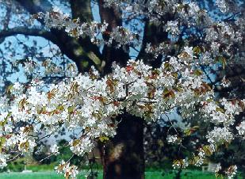

Гал╕ Струк
На основ╕ твору Г.Гейне (тобто передерто)
С
онце ╕ кв╕тку, пташину й весну
Т
ак я кохав, то тепер на люблю
Р
адо дивлюсь на Галину ╓дину
У
н╕й я знайшов мого щастя перлину:
К
в╕тку ╕ сонце, весну ╕ пташину.

Жовква, 4 березня 1994